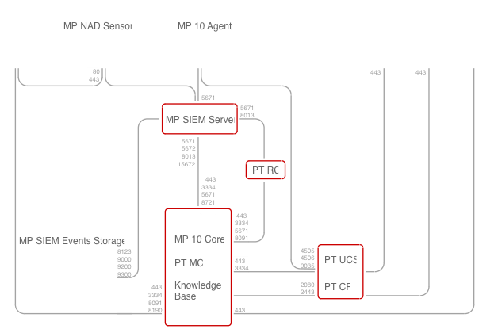

请访问原文链接：MaxPatrol 10 (MaxPatrol SIEM, MaxPatrol VM) - 安全信息和事件管理 (SIEM), 下一代漏洞管理系统 查看最新版。原创作品，转载请保留出处。
作者主页：sysin.org

Positive Technologies
关于 MaxPatrol 10
Positive Technologies MaxPatrol 10 (MaxPatrol 10) 是一个收集、存储和分析公司 IT 基础设施中发生的事件数据的系统。这确保了对整个 IT 基础设施以及各个细分、主机和应用程序的信息安全监控。
MaxPatrol 10 提供以下基本功能：
- 资产库存。该系统定期收集有关网络主机及其之间交互的数据。
- 事件数据收集。事件源是任何受支持的硬件或软件。
- 事件分析以检测信息安全事件。Positive Technologies 专家不断更新一套为分析提供基础的特殊规则。
- 信息安全事件管理 (sysin)。该系统有助于管理信息安全事件调查和响应。
- 数据可视化。有关资产、事件和事件的摘要信息以图表和表格的形式显示在系统 Web 界面中。
MaxPatrol 10 提供以下附加功能：
- 专业知识包。使用由 Positive Technologies 专家开发的知识库。该数据库包含有关黑客攻击的最新策略和技术的数据，有助于检测复杂的非标准攻击。
- 资产管理自动化。系统可以自动设置资产重要性以及 IT 基础设施扫描后收到的资产数据的新鲜度和老化期。
- 声誉列表。有关恶意 IP 地址和危险文件哈希的最新信息用于防止事件发生。
- 事件重新检查。添加新规则或更新表格列表数据后，对先前接收到的事件进行回顾性关联；回顾性地寻找妥协的指标。
- 资产安全监控 (sysin)。该系统分析并监控企业整个 IT 基础设施以及单个主机和系统的安全标准合规性。
- 发送通知。通知操作员有关企业 IT 基础设施的变化、数据收集任务的操作、正在收集的事件以及检测到的信息安全事件。
- 与 PT NAD 集成。基于会话和攻击的事件注册。
MaxPatrol 10 架构
MaxPatrol 10 由可部署在单个或多个服务器上的软件组件组成。这种结构确保了在任何规模的企业中部署系统的可扩展性。对于高生产力系统（每秒超过 3,000 个事件），建议分布式安装 MaxPatrol 10。
1、MaxPatrol 10 Core component
MaxPatrol 10 Core 组件（MP 10 Core）是系统的主要组件和管理服务器。MP 10 Core 安装在企业总部或主要区域办事处或职能部门 (sysin)，提供以下功能：
- 资产配置集中存储
- 所有系统组件的集中管理
- 及时响应信息安全事件
- 企业分支机构联动调查事件
- 漏洞管理流程自动化
- 支持系统 Web 界面
2、MaxPatrol SIEM Server component
MaxPatrol SIEM Server 组件（MP SIEM Server）提供安全事件处理的主要功能：
- 事件的标准化、聚合、丰富和关联
- 自动事件创建
- 从事件创建资产
- 将事件与资产链接
3、MaxPatrol SIEM Events Storage component
MaxPatrol SIEM 事件存储组件（MP SIEM 事件存储）提供事件信息的集中存储。
4、MaxPatrol 10 Agent component
MaxPatrol 10 Agent 组件（MP 10 Agent）扫描公司 IT 基础设施资产并从源收集事件。MP 10 Agent 具有模块化结构。扫描模块检测主机以及主机开放的网络服务，并在渗透测试模式下进行特定的检查。
MP 10 Agent 收集有关资产的以下信息：操作系统的名称、版本和供应商；安装的操作系统更新；已安装软件的列表；操作系统和软件参数；用户帐户和权限 (sysin)；有关硬件、正在运行的操作系统网络服务、网络和安全工具参数的信息。
MP 10 Agent 管理模块、监控其状态并确保模块与 MP SIEM 服务器组件之间的数据交换。
您可以将多个 MP SIEM Server 组件连接到单个 MP 10 Agent 组件。因此，您可以提高性能，在扫描期间考虑网络拓扑和数据通道类型，例如安装的防火墙或其他安全工具。
5、MaxPatrol NAD Sensor component
MaxPatrol NAD 传感器组件（MP NAD 传感器）对 OSI 模型 L2-L7 层的网络流量进行全面分析并收集连接数据。
MP NAD 传感器组件由核心代理和 DPI 事件收集器模块以及 Positive Technologies 网络攻击发现产品 (PT NAD) 组成。
与普通版 PT NAD 不同，MP NAD 传感器具有以下特点：
- 捕获的流量不会保存到硬盘驱动器（无 PCAP 文件存储库）。
- 流量元数据最多存储一天。
- 流量捕获速率限制为 1 Gbps。
6、Knowledge Base component
知识库组件是 Positive Technologies 产品的统一知识库。知识库包含专业知识包（规则集和表格列表）、宏和事件字段方案、有关漏洞的信息（漏洞发生的条件和修复方法）、安全公告和资产上可能的软件。此外，知识库还提供了用于处理数据库数据的 SDK 实用程序。
7、PT Management and Configuration component
PT 管理和配置组件 (PT MC) 提供以下功能：
- 单点登录到企业基础设施中部署的 Positive Technologies 产品
- 系统用户管理，包括创建新账户、授予权限、屏蔽和激活账户
- 用户活动记录
8、PT Update and Configuration Service component
PT 更新和配置服务组件 (PT UCS) 是 MaxPatrol 10 组件的在线更新服务。PT UCS 确保检查新版本组件的可用性、下载和安装，并更新专业知识包、宏、事件字段方案和漏洞数据库。
PT UCS 使用 SaltStack 软件向组件提供新版本：Salt Master 模块安装在 PT UCS 服务器上，Salt Minion 模块安装在 MaxPatrol 10 组件服务器上 (sysin)。PT UCS 从 Positive Technologies 全局更新服务器下载组件的新版本，并将其发送到 Salt Minion 模块，以便使用 Salt Master 模块进行安装。
9、PT Cybsi Provider component
PT Cybsi Provider 组件 (PT CP) 提供有关信息安全威胁和危害指标的实时企业特定数据。妥协指标是在网络或操作系统中观察到的工件，并且是基础设施中恶意活动的迹象。
作为信息安全威胁和危害指标的数据来源，PT CP 支持卡巴斯基、Positive Technologies 和 Group-IB 的声誉服务。要获取卡巴斯基和 Group-IB 信誉服务的许可证，请联系供应商（有关更多信息，请访问 kaspersky.com 和 group-ib.com ）。
10、PT Retro Correlator component
PT Retro Correlator 组件 (PT RC) 使用相关规则来重新检查之前收到的事件。该组件由服务 mpagent.service 和 siemserver-retrocontroller.service 组成。
11、PT Security Intelligence Portal component
PT 安全情报门户组件 (PT SIP) 以清晰且用户友好的格式提供有关资产、漏洞和事件的信息，以评估基础设施安全状态和信息安全效率。PT SIP 为企业管理层、信息安全部门负责人和信息安全专家提供信息安全数据分析和决策支持。
MaxPatrol 10 operating algorithm and component interaction scheme

MaxPatrol 10 的操作算法如下：
- 代理收集有关公司 IT 基础设施的数据：
- — MP 10 Agent 组件模块扫描 IT 基础设施，从源收集网络主机信息和事件。
- — MP NAD 传感器组件收集网络连接信息。
- 代理将收集的数据发送到 MP SIEM 服务器和 MP 10 Core。发送的事件在 MP SIEM Server 中用于规范化、聚合、丰富和关联。
- MP 10 核心处理并存储扫描结果，以及有关检测到的操作系统、软件、服务、端口的详细信息以及有关主机及其之间交互的其他信息。此外，该组件还存储数据收集任务、扫描配置文件和传输的参数以及引用的数据和脚本，并通过联系其余系统组件来执行用户请求来管理对这些数据的访问。
- MP SIEM Server 处理传入的事件流，根据规范化规则统一事件的格式，并根据聚合规则对事件进行分组。它还将事件链接到资产，并在必要时根据事件创建新资产 (sysin)。接下来，它使用丰富规则或表格列表丰富事件数据，并根据关联规则分析规范化事件的流程，以检测和注册信息安全事件。MP SIEM 服务器以原始（未处理）和标准化形式将传入事件转发到 MP SIEM 事件存储以进行存储。
- MP 10 Agent 服务器还可以规范事件。为此，请在 MP 10 代理服务器上安装 MP SIEM 服务器的精简版（代理上的 SIEM）。在此 MP 10 代理服务器上规范化的事件将被发送到主 MP SIEM 服务器以进行聚合、丰富和关联。
- 知识库包含一个包含数据的知识库，MaxPatrol 10 使用这些数据构建从事件源和基础设施对象接收到的信息以及检测漏洞。
- MP 10 Core 使用知识库中的数据计算资产的漏洞。
- PT MC 提供单点登录来访问系统并记录用户操作。
- 为了管理系统、查看数据、创建报告和监控信息，用户根据 PT MC 中分配的权限通过 Web 界面连接到 MP 10 Core。
- PT CP 提供有关信息安全威胁和危害指标的数据。
- PT RC 使用新的关联规则和表格列表数据对已收到的事件进行回顾性检查。
- PT UCS 更新系统组件和知识库。
部署选项 MaxPatrol SIEM
MaxPatrol SIEM 提供基础设施 360° 可视性并检测安全事件。定期更新 Positive Technologies 专家的知识。轻松适应网络变化。
检测重要威胁
我们的专家用于查明最新威胁的专业知识定期封装在 PT 知识库提供的专业知识包中。
MaxPatrol SIEM 借助 PT KB 不断 “变得更加智能”，可帮助用户在严重后果出现之前检测到攻击者 TTP。
减轻内部专家的负担
专业知识包基于对新威胁的持续监控、攻击分析和事件调查 (sysin)。这减轻了负责监控威胁和编写规则的内部安全专家的负担。专业知识包中包含的规则不需要繁琐的调整，只需简单配置即可使用。
提供基础设施 360° 可视性
IT 基础设施对安全人员变得透明：借助 MaxPatrol 漏洞和合规性管理系统的库存技术，MaxPatrol SIEM 可以全面枚举资产和安全漏洞。从 300 多种类型的系统中主动和被动收集数据。

评估攻击的可行性
MaxPatrol SIEM 自动映射网络拓扑并在发生变化时更新此信息。可视化有助于更好地了解基础设施、检查资产端口、评估攻击的可行性并调查事件。

维护完整的企业范围安全状况
通过显示事件、事故、资产漏洞和触发规则的仪表板，一目了然地查看整个安全状况。用户可以通过从 20 个默认小部件中进行选择或创建自己的小部件来自定义仪表板。
部署选项 MaxPatrol VM
MaxPatrol VM：下一代漏洞管理系统
VMNG——改变了什么？
如何检测和管理漏洞是任何信息安全专业人士都关心的问题，无论哪个行业。为了解决这些任务，公司使用安全分析工具。他们以自动模式对所有系统进行深度扫描，以识别漏洞和硬件配置错误。然而，扫描后问题仍然存在。要实施漏洞管理，还需要确定哪些漏洞对基础设施最关键、从哪些方面入手、如何正确确定消除任务的优先级以及如何评估哪些行动影响公司的安全级别 (sysin)。下一代漏洞管理系统不仅能够及时识别漏洞，还能帮助构建整个漏洞管理流程。
MaxPatrol VM 是下一代漏洞管理系统。该解决方案允许您构建完善的漏洞管理流程，并在日常操作和紧急扫描期间对其进行控制。
使用 MaxPatrol VM，您可以：
- 获取有关 IT 基础设施的完整且持续更新的数据。
- 考虑受保护资产的重要性。
- 为 IT 部门识别漏洞、确定漏洞优先级并设置漏洞处理规则。
- 控制漏洞消除。
- 监控公司的整体安全水平。
MaxPatrol VM 基于独特的安全资产管理（SAM）技术。这允许 MaxPatrol VM 使用主动和被动数据收集，随时构建所观察的 IT 基础设施的完整且持续更新的模型。通过了解 IT 环境，该解决方案在所有公司系统中采用并自动化漏洞管理，同时考虑到网络组件和基础设施变更的重要性。

MaxPatrol VM 交互式仪表板
交互式仪表板有助于跟踪关键资产扫描的状态和有效性、新的未经评估的网络资产的出现、高严重性漏洞的数量以及漏洞消除指标。
Positive Technologies 产品和服务
Positive Technologies 是注重结果的网络安全领域的行业领导者，也是信息安全解决方案的主要全球提供商。我们的使命是保护企业和整个行业免受网络攻击和不可容忍的损害。全球有超过 3,300 个组织使用我们公司开发的技术和服务。
Positive Technologies 是俄罗斯第一家也是唯一一家在莫斯科交易所上市的网络安全公司（MOEX：POSI），拥有 180,000 名股东，而且还在不断增加。
我们的新型解决方案——元产品——专注于以结果为导向的网络安全方法。Positive Technologies 的首款元产品 MaxPatrol O2 可以在对公司造成不可容忍的损害之前自动检测并阻止攻击 (sysin)。MaxPatrol O2 可以替代安防监控中心的整个团队，并且只需要一个人来管理。该保护系统只需要专家最少的知识和精力。
为了证明以结果为导向的信息安全方法确实有效，我们进行了网络演习（在我们自己的基础设施以及其他基础设施上）并公开测试我们的产品。我们的解决方案基于数百名信息安全专家 20 年的研究经验和专业知识。
Positive Technologies 的产品和服务有助于：
- 只需一个人的帮助即可以自动模式停止攻击。
- 监控安全并快速检测基础设施中的漏洞。
- 检测任何规模的基础设施（包括工业系统）中的安全事件。
- 检测内部和外部流量中的攻击。
- 保护 Web 应用程序免受 APT 攻击。
- 检测应用程序中的漏洞和错误 (sysin)，并支持安全开发流程。
- 检测并反击涉及现代恶意软件的有针对性的大规模攻击。
- 响应端点和基础设施内部的网络威胁，利用多个信息安全系统的事件和上下文来验证攻击。
我们在莫斯科、圣彼得堡、下诺夫哥罗德、萨马拉、新西伯利亚、阿卡德姆哥罗多克和托木斯克设有七个俄罗斯办事处，并在哈萨克斯坦设有一个办事处。该团队拥有 1,800 多名员工，其中包括专门从事 SCADA 和 ERP 系统、银行和电信以及移动和 Web 应用程序保护的世界级专家。
Positive Technologies 受到国际分析机构的高度评价：该公司曾三度获得 Gartner Web 应用程序防火墙 (WAF) 魔力象限中的远见者地位。
我们为以下活动提供了网络安全：
- 2013 年喀山夏季世界大学生运动会
- 2014 年索契奥运会
- 2018 年世界杯
- 2018 年俄罗斯总统选举
- 2019 年克拉斯诺亚尔斯克冬季世界大学生运动会
- 2020 年俄罗斯宪法公投
- 2021 年俄罗斯国家杜马选举
Positive Technologies 被誉为全球道德安全研究领域的远见者和领导者。每年，我们的专家都会在各种类别和类型的 IT 系统中发现数百个零日漏洞，其中包括 Cisco、Citrix、IBM、Intel、Microsoft 和 VMware 的产品。为了检测危险漏洞，我们的专家已被列入 Adobe、Apple、AT&T、GitLab、Google、IBM、Mastercard、Microsoft、PayPal、VK 和 Yandex 等公司的名人堂。作为负责任的披露政策的一部分 (sysin)，所有检测到的漏洞都会报告给软件供应商，并且在供应商发布所需更新之前不会发布。
我们乐意分享我们对信息安全的了解：
- 12 年来，我们一直在举办自己的研究和实践论坛 Positive Hack Days。作为俄罗斯和独联体国家最大的信息安全活动之一，成千上万关心网络安全的人士参加了此次活动：IT 和信息安全专家、企业和政府代表、安全研究人员和白帽人士、小学生和学生。在 Positive Hack Days 期间，举办了数百场讲座和研讨会，涵盖信息安全中最有趣的主题，而竞赛则为工业控制系统、银行和移动服务以及网络应用程序的保护分析增添了乐趣。2023 年，该论坛首次以开放网络安全节的形式举办，云集了信息安全专家、技术开发人员以及莫斯科居民和嘉宾。
- 我们积极为一流大学制定教育计划，帮助学生做好职业准备，在职业生涯中取得领先地位：由我们公司专家编写的积极教育材料已在超过 65 所大学使用。
- 我们举行了世界上最大的网络战 “对峙”，它汇集了进攻性和防御性网络安全方面最优秀的俄罗斯和外国专家。该网络靶场包含不同行业典型的生产链、业务场景和技术景观的全保真复制品。专家分析了引发不可容忍事件的可能性以及预防方法。
系统要求
Software requirements
所有 MaxPatrol 10 组件均支持 Linux 系列 64 位操作系统，例如 Astra Linux Special Edition 1.7（基于 Linux 内核版本 5.4、5.10 或 5.15）或 Debian 10.3-10.13。您还可以在 Microsoft Windows Server 2012、2012 R2、2016、2019 或 2022 上安装 MP 10 Agent 组件。
推荐使用：Debian 10.13 x86_64 OVF (sysin) - VMware 虚拟机模板
下载地址
Positive Technologies MaxPatrol 10 v26.0
百度网盘链接：https://pan.baidu.com/s/16wN_kUUPgJ_mCgY3LbnS1Q?pwd=sg5k
相关产品：
- PT Application Inspector 4.5 (Linux) - 静态、动态和交互式应用程序安全测试
- MaxPatrol 10 (MaxPatrol SIEM, MaxPatrol VM) - 安全信息和事件管理 (SIEM), 下一代漏洞管理系统
- PT Network Attack Discovery 11 (Linux) - 网络检测和响应 (NDR/NTA) 系统
- PT Network Attack Discovery 11 OVF - 网络检测和响应 (NDR/NTA) 系统
更多：HTTP 协议与安全

文章用于推荐和分享优秀的软件产品及其相关技术，所有软件默认提供官方原版（免费版或试用版），免费分享。对于部分产品笔者加入了自己的理解和分析，方便学习和研究使用。任何内容若侵犯了您的版权，请联系作者删除。如果您喜欢这篇文章或者觉得它对您有所帮助，或者发现有不当之处，欢迎您发表评论，也欢迎您分享这个网站，或者赞赏一下作者，谢谢！
 支付宝赞赏
支付宝赞赏
 微信赞赏
微信赞赏
赞赏一下